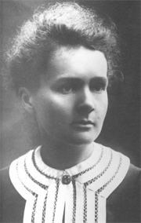

Мария Кюри

Польский, затем французский химик. Родилась в Варшаве в интеллигентской семье в тяжелый период российской оккупации, выпавшей на долю Польши. Учась в школе, помогала матери содержать пансион, прислуживая в нем в качестве горничной. После окончания школы какое-то время работала гувернанткой в состоятельных семьях, чтобы заработать средства на получение медицинского образования для своей сестры. На этот период приходится расстроенная родителями жениха помолвка Склодовской с юношей из семьи, где она прислуживала (родители сочли такой брак их сына недостойным их социального положения и упустили блестящую возможность улучшить свой фамильный генофонд). После получения ее сестрой медицинского образования в Париже туда же оправилась учиться и сама Склодовская.
Блестящие результаты вступительных экзаменов по физике и математике привлекли к молодой полячке пристальное внимание ведущих французских ученых. Результатом стала ее помолвка в 1894 году с Пьером Кюри и брак с ним, заключенный в следующем году. В те годы исследования явления радиоактивности только начинались, и работы в этой области был непочатый край. Пьер и Мария Кюри занялись извлечением радиоактивных образцов из руд, добываемых в Богемии, и их исследованием. В результате супругам удалось открыть сразу несколько новых радиоактивных элементов (см. Радиоактивный распад), один из которых был назван кюрием в их честь, а еще один — полонием в честь родины Марии. За эти исследования супруги Кюри были совместно с Анри Беккерелем (Henri Becquerel, 1852–1908), открывшим рентгеновские лучи, удостоены Нобелевской премии по физике за 1903 год. Именно Мария Кюри первой ввела в употребление термин «радиоактивность» — по названию первого открытого Кюри радиоактивного элемента радия.